Desde 07 de abril de 2023
0
dias desde que você mudou minha vida.O tapa que mudou tudo.
Tudo começou de um jeito estranho. Um tapa. Um orgulho ferido. Um píer silencioso. E ironicamente... foi ali que começou a maior história da minha vida.
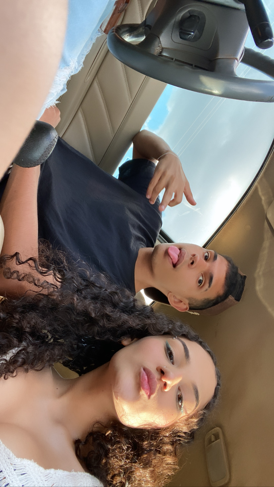
Algumas pessoas entram na nossa vida...
e nunca mais saem.
Nós contra o mundo.
Entre praias, estrelas, viagens e fumaça no ar, eu descobri que qualquer lugar parecia casa ao seu lado.
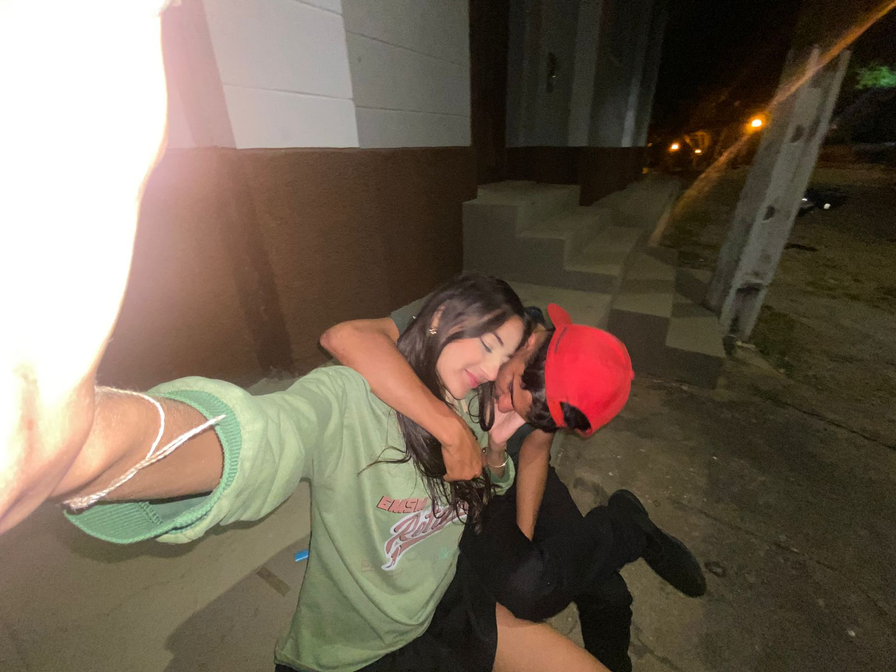
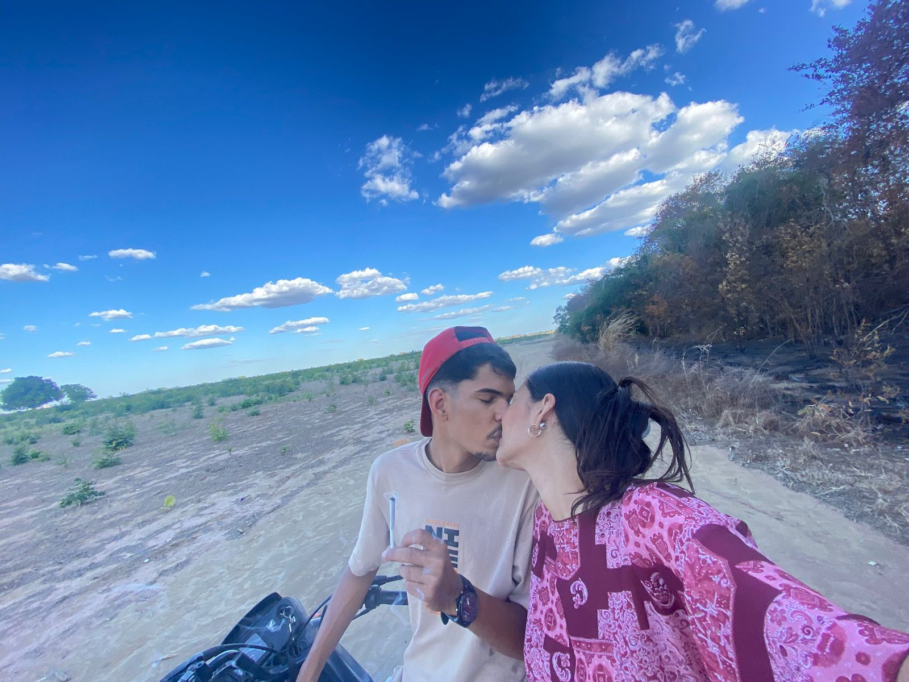
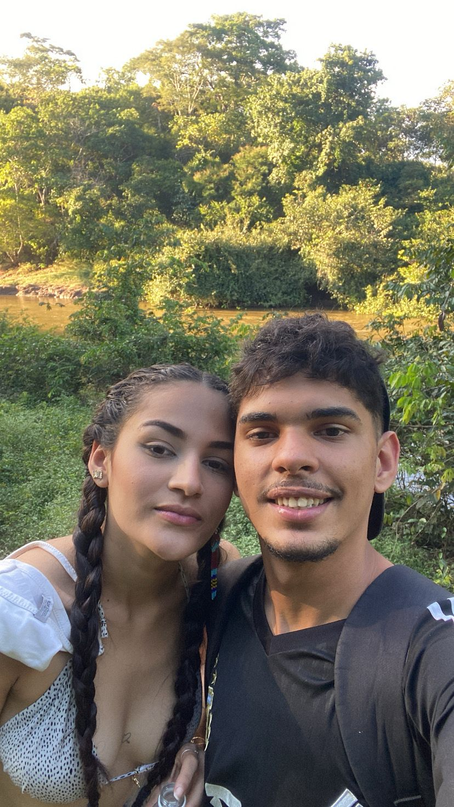
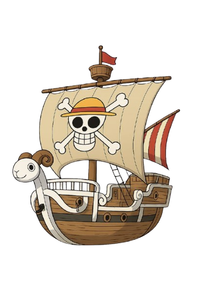
Companheiros de jornada.
Algumas pessoas não entram na nossa vida.
Elas embarcam nela.
E algumas tripulações… nunca realmente se desfazem.
Chuva de memórias
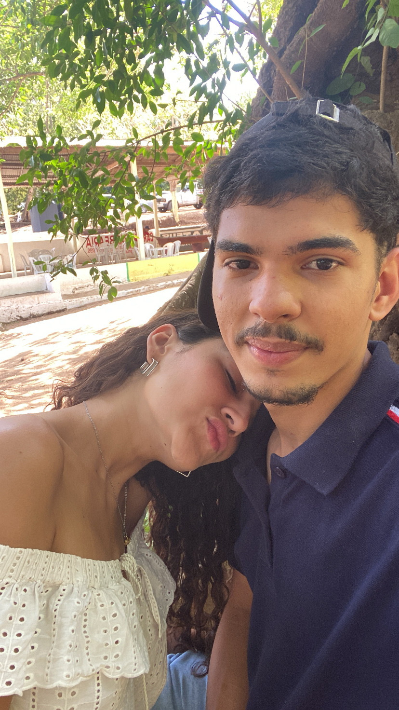
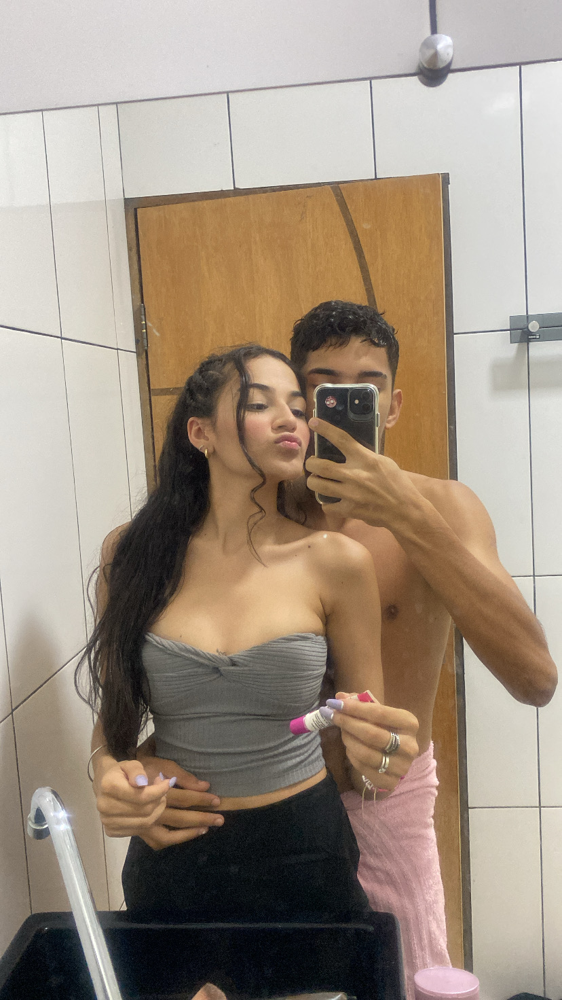
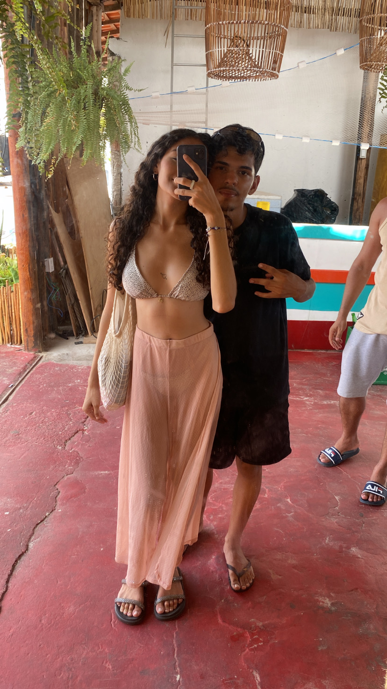
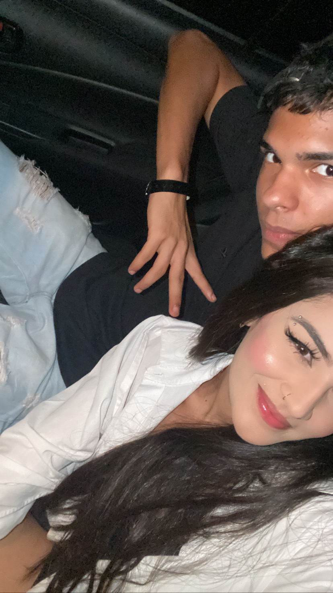
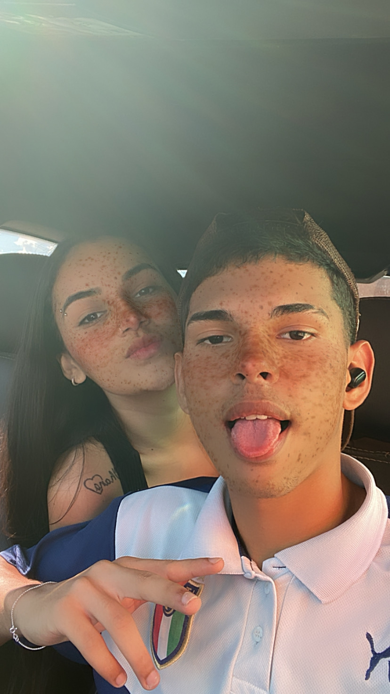
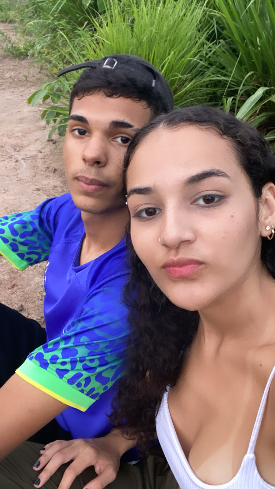
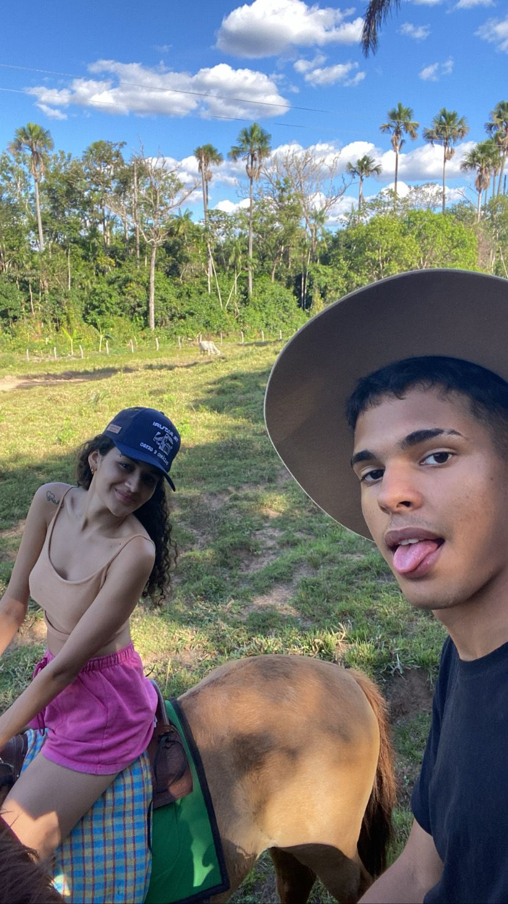
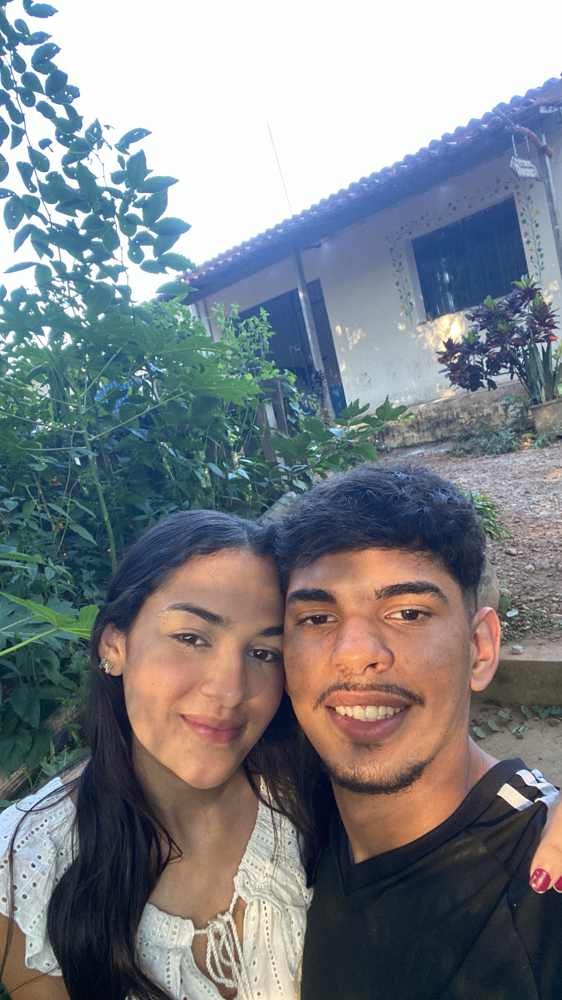
Eu escolhi música por música.
Não foi qualquer playlist.
Tem música que parece saudade.
Tem música que parece tua risada.
Tem música que me lembram você.
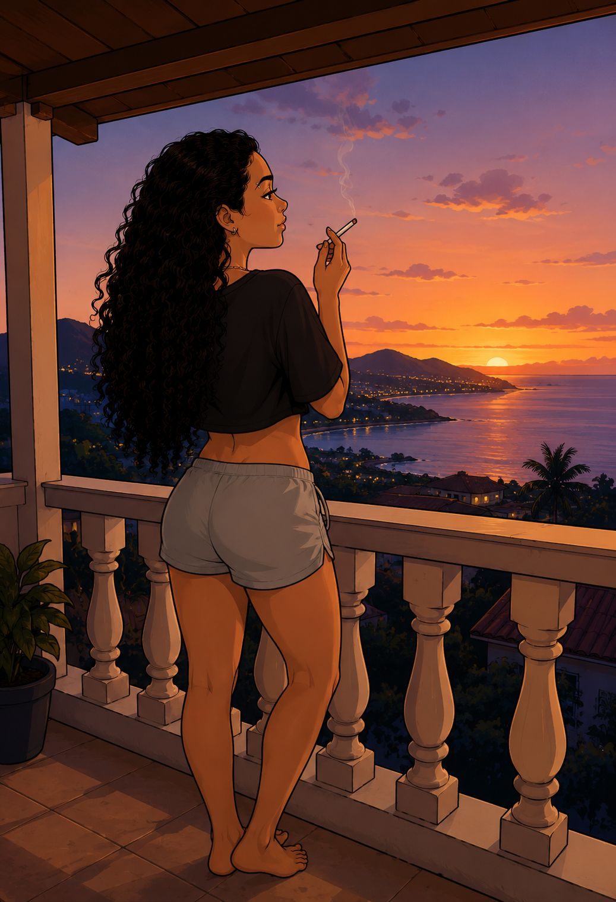
Entre tantos caminhos...
eu ainda reconheço o seu.
Ainda é você.
Talvez a vida tenha colocado quilômetros entre nós. Mas nunca conseguiu apagar você de mim. Porque algumas pessoas não passam. Permanecem.
algumas conexões continuam brilhando.
Se você chegou até aqui...
Existe uma última coisa que eu preciso te dizer.
Para Maria Raquel ❤️
Então...
Feliz aniversário, Maria Raquel.
Espero, de todo o coração, que tenha gostado deste presente.
Eu me dediquei ao máximo para criar algo especial para você. E, na verdade, este nunca foi apenas um simples site na internet. É uma pequena parte de mim transformada em palavras, memórias e sentimentos. Um presente feito para a pessoa que eu amo.
Quis criar algo que pudesse permanecer no tempo, como uma forma de eternizar as lembranças mais bonitas que vivemos juntos. Uma homenagem à nossa história, ao amor que construímos, às risadas que compartilhamos, aos momentos difíceis que enfrentamos e a tudo aquilo que fez parte de nós.
Porque, depois de tudo, foi ao seu lado que eu aprendi o que realmente significa amar.
Aprendi que o amor também é saudade.
É encontrar alguém nas coisas mais simples.
Em uma música que toca sem aviso.
Em uma palavra perdida no meio de uma conversa.
Em um filme.
Em uma paisagem.
Em um fim de tarde qualquer.
É perceber que tudo aquilo que carrega um pouco de beleza acaba, de alguma forma, me levando até você.
Você talvez nem imagine, mas continua me inspirando todos os dias.
Me inspira a ser um homem melhor.
A crescer.
A amadurecer.
A me tornar alguém que não apenas ame você, mas que também seja capaz de apoiar seus sonhos, segurar sua mão nos momentos difíceis e admirar a mulher incrível que você está se tornando.
Você tem um futuro brilhante, Maria Raquel.
Eu consigo enxergar isso.
Consigo enxergar sua força, sua inteligência, sua bondade e tudo aquilo que faz de você alguém tão especial.
E mesmo que, por acaso, eu não faça parte desse futuro, quero que saiba que continuo torcendo por você.
Todos os dias.
Em minhas orações.
Nos meus pensamentos.
No silêncio das coisas que ninguém vê.
Eu peço a Deus que te conduza para a vida que você sonha, para a pessoa que deseja se tornar e para toda a felicidade que você merece encontrar.
Eu te amo muito.
E não sei como foi para você, mas para mim foi difícil.
Porque você não era apenas minha namorada.
Você era minha melhor amiga.
A pessoa com quem eu podia ser eu mesmo.
Sem máscaras.
Sem medo.
Sem precisar esconder meus sentimentos.
Você era a pessoa para quem eu queria contar as coisas boas e as ruins.
A pessoa com quem eu queria dividir minhas vitórias, meus medos, meus sonhos e minha vida.
Você era tudo para mim.
Capítulo II
Mas o tempo...
O tempo governa todas as coisas.
Ele molda impérios e os transforma em ruínas.
Aproxima caminhos e separa destinos.
Escreve histórias que ninguém poderia prever.
E a distância fez parte da nossa história.
Esse tempo longe muda muita coisa.
Muda pessoas.
Muda pensamentos.
Muda ideias.
Muda sentimentos.
Mas existe algo dentro de mim que permaneceu exatamente igual.
O amor que sinto por você.
Talvez você já não sinta o mesmo.
Talvez seu coração tenha seguido outros caminhos.
E eu respeito isso.
Mas quero que saiba que aquilo que você representa para mim nunca mudou.
Porque você foi minha parceira.
Minha melhor amiga.
Meu primeiro amor.
E uma das pessoas mais importantes que já passaram pela minha vida.
E se existe algo que eu aprendi com tudo isso, é que o amor verdadeiro não desaparece apenas porque o tempo passou.
Ele se transforma em carinho.
Em admiração.
Em gratidão.
Em memórias que continuam aquecendo o coração mesmo quando os dias mudam.
E sabe...
Existe apenas uma coisa que eu gostaria de saber de você.
Talvez seja a única pergunta que o tempo nunca conseguiu responder por mim.
O que ainda existe dentro do seu coração quando pensa em nós?
Quando olha para a nossa história, você enxerga algo que ainda poderia existir no futuro? Ou acredita que fomos apenas uma bonita história de adolescência, um capítulo que cumpriu seu propósito e ficou para trás?
Não existe resposta certa ou errada.
Eu só preciso da verdade.
Porque durante todo esse tempo, muitos dos meus sonhos carregaram você dentro deles. Em cada plano para o futuro, em cada objetivo que tracei, existia uma parte de mim acreditando que, em algum momento, nossos caminhos poderiam se encontrar novamente.
Hoje nós não somos mais aqueles adolescentes.
A vida nos mudou.
O tempo nos transformou.
Mas aquilo que eu sentia nunca deixou de ser verdadeiro.
Eu ainda olho para você e vejo alguém com quem eu construiria uma vida inteira.
Alguém por quem eu atravessaria distâncias, enfrentaria dificuldades e faria todos os esforços possíveis para estar ao lado.
Não porque preciso de você para ser feliz.
Mas porque, se existisse uma escolha do meu coração, ela continuaria sendo você.
E se, em algum lugar dentro de você, ainda existir a vontade de tentar, de construir algo novo a partir de tudo o que fomos, quero que saiba que eu teria coragem de ir atrás disso com todas as minhas forças.
Mas, se o seu coração escolheu outro caminho, eu também vou entender.
Vou respeitar.
Vou aceitar.
Porque amar alguém também é respeitar as escolhas dessa pessoa.
Só não quero viver preso a perguntas que apenas você pode responder.
Por isso, acima de qualquer resposta, eu só gostaria de conhecer a verdade.
E seja ela qual for, eu sempre vou guardar nossa história com carinho.
Porque você foi, e sempre será, uma das partes mais bonitas da minha vida.
Capítulo III
E, acima de tudo, quero que você seja feliz.
Que a vida te abrace com a mesma delicadeza que você merece.
Que seus sonhos encontrem caminhos.
Que seus medos encontrem descanso.
Que você nunca deixe de acreditar na pessoa incrível que é.
Talvez o tempo tenha mudado muitas coisas.
Talvez ainda mude outras tantas.
Mas existe uma verdade que ele nunca conseguiu levar embora: o carinho, a admiração e o amor que sempre vou sentir por você.
Porque algumas pessoas passam pela nossa vida.
Outras deixam marcas.
Mas existem aquelas raras que se tornam parte da nossa história para sempre.
Você é uma delas.
E independentemente de onde a vida nos levar daqui para frente, sempre vou agradecer por cada risada, cada conversa, cada abraço, cada momento e cada lembrança que construímos juntos.
Obrigado por ter existido na minha vida.
Obrigado por ter sido meu porto seguro quando eu precisava.
Obrigado por ter me ensinado, mesmo sem perceber, o que é amar alguém de verdade.
E se um dia, muitos anos no futuro, nossos caminhos se cruzarem novamente, espero que possamos olhar para trás e sorrir ao lembrar da história bonita que escrevemos.
Mas hoje não é dia de falar sobre despedidas.
Hoje é dia de celebrar você.
A menina que se tornou uma mulher incrível.
A pessoa que eu admiro.
A pessoa que eu amo.
Então sorria.
Aproveite seu dia.
Faça pedidos.
Colecione memórias.
Viva intensamente.
E nunca se esqueça do quanto você é especial.
Feliz aniversário, Maria Raquel.
Que este novo ciclo seja tão bonito quanto o brilho que você carrega dentro de si.
E que, aconteça o que acontecer, exista uma coisa que o tempo jamais será capaz de apagar:
Você foi o meu primeiro amor.
Minha melhor amiga.
Meu lar nos dias difíceis.
E uma das histórias mais bonitas que Deus escreveu na minha vida.
Com todo o amor do meu coração.
Para sempre,